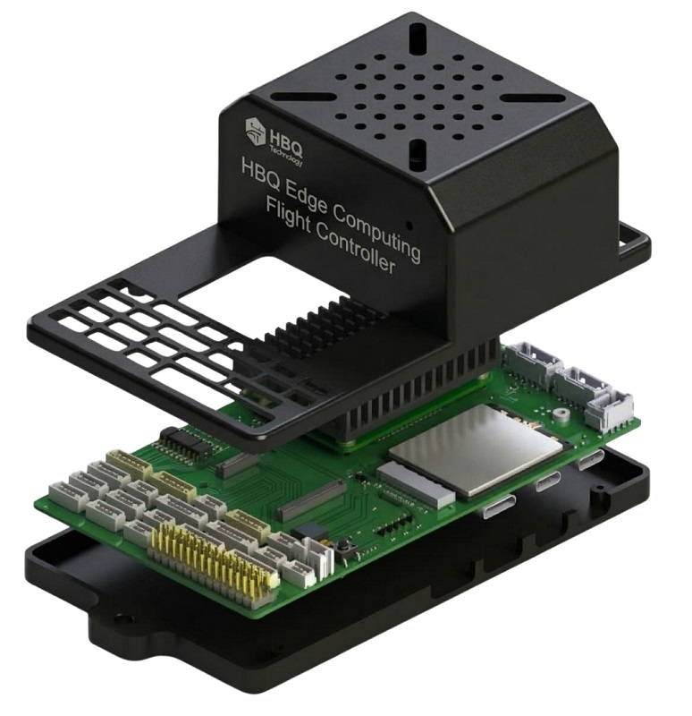

A compute-native Pixhawk-class controller for AI, cloud telemetry and field robotics.Một flight controller chuẩn Pixhawk được thiết kế theo hướng compute-native cho AI, telemetry đám mây và robot tự hành.
The Edge Computing Flight Controller Pixhawk 6X merges FMUv6 flight control, Raspberry Pi Compute Module 5, integrated 4G/5G modem support and Ethernet networking onto one baseboard. The goal is to remove the usual stack of autopilot plus companion computer plus modem, while keeping compatibility with PX4, ArduPilot and standard Pixhawk peripherals.Edge Computing Flight Controller Pixhawk 6X kết hợp điều khiển bay FMUv6, Raspberry Pi Compute Module 5, hỗ trợ modem 4G/5G tích hợp và mạng Ethernet trên một baseboard duy nhất. Mục tiêu là loại bỏ cấu trúc autopilot cộng companion computer cộng modem rời, trong khi vẫn giữ tương thích với PX4, ArduPilot và hệ ngoại vi chuẩn Pixhawk.

Product SnapshotTóm tắt sản phẩm
This product is built for autonomous systems that need more than flight stabilization alone. It combines Pixhawk-class control, onboard Linux compute, cellular connectivity and resilient power architecture into one compact platform, helping teams deploy AI-ready, connected vehicles with less wiring, less integration overhead and a cleaner system design.Sản phẩm này được thiết kế cho các hệ tự hành cần nhiều hơn khả năng ổn định bay. Nó kết hợp điều khiển chuẩn Pixhawk, Linux compute onboard, kết nối di động và kiến trúc nguồn bền vững trong một nền tảng gọn, giúp đội phát triển triển khai phương tiện kết nối, sẵn sàng cho AI với ít dây nối hơn, ít công tích hợp hơn và thiết kế hệ thống sạch hơn.
System ArchitectureKiến trúc hệ thống
The key architectural idea is simple: keep the real-time flight stack deterministic on FMUv6, move heavy Linux and AI workloads to CM5, and bind both domains tightly through internal UART and Ethernet while the modem extends the whole platform to the cloud.Ý tưởng kiến trúc cốt lõi khá rõ ràng: giữ vòng điều khiển thời gian thực trên FMUv6, chuyển tải Linux và AI nặng sang CM5, rồi liên kết chặt hai miền này bằng UART và Ethernet nội bộ, trong khi modem mở rộng toàn bộ nền tảng ra đám mây.

Architecture SummaryTóm tắt kiến trúc
- FMUv6 remains the deterministic control brain for sensors, RC, mixers, safety logic and mission-critical loops.FMUv6 vẫn là bộ não điều khiển tất định cho cảm biến, RC, mixer, logic an toàn và các vòng lặp nhiệm vụ quan trọng.
- CM5 hosts Linux, ROS 2, vision pipelines, AI inference, video encoding and higher-level autonomy software.CM5 chạy Linux, ROS 2, pipeline thị giác máy tính, suy luận AI, mã hóa video và phần mềm tự hành cấp cao.
- The M.2 modem path adds cellular backhaul for telemetry, remote management and live streaming.Đường modem M.2 bổ sung kết nối di động cho telemetry, quản trị từ xa và truyền hình ảnh trực tiếp.
- Triple redundant power makes the platform more suitable for field deployment than a casual autopilot plus SBC stack.Nguồn ba lớp giúp nền tảng phù hợp hơn cho triển khai thực địa so với cấu hình autopilot cộng SBC thông thường.
How To Read The DiagramCách đọc sơ đồ
- Left side: connectivity and compute expansion, including modem and CM5.Bên trái: khối mở rộng kết nối và compute, gồm modem và CM5.
- Center: Pixhawk 6X flight-control core and internal system links.Ở giữa: lõi điều khiển bay Pixhawk 6X và các liên kết nội bộ.
- Right side: IO coprocessor and field-facing PWM or RC functions.Bên phải: đồng xử lý IO và các chức năng PWM hoặc RC hướng ra hiện trường.
- Top and bottom edges: peripheral interfaces used for navigation, telemetry, debugging and payload expansion.Phía trên và dưới: các giao tiếp ngoại vi dùng cho dẫn đường, telemetry, debug và mở rộng payload.
Key AdvantagesƯu điểm chính
The differentiator is not just one faster module. The differentiator is that flight control, compute and connectivity are architected together from the start.Điểm khác biệt không chỉ nằm ở một mô-đun mạnh hơn. Điểm khác biệt là điều khiển bay, tính toán và kết nối được thiết kế cùng nhau ngay từ đầu.
Integrated Edge AIAI Edge tích hợp
CM5 provides enough Linux compute to host OpenCV, TensorFlow Lite, MAVSDK and ROS 2 on the same vehicle controller.CM5 cung cấp đủ năng lực Linux compute để chạy OpenCV, TensorFlow Lite, MAVSDK và ROS 2 ngay trên cùng bộ điều khiển phương tiện.
Always-Connected DesignThiết kế luôn kết nối
With 4G/5G modem support and Ethernet paths, the platform is ready for live telemetry, video and OTA workflows.Với hỗ trợ modem 4G/5G và Ethernet, nền tảng sẵn sàng cho telemetry trực tiếp, video và quy trình OTA.
Pixhawk Ecosystem FitPhù hợp hệ sinh thái Pixhawk
It remains anchored in FMUv6 and Pixhawk 6X expectations, so teams do not need to abandon familiar peripherals and flight stacks.Sản phẩm vẫn dựa trên FMUv6 và logic Pixhawk 6X, nên đội phát triển không phải bỏ các ngoại vi và flight stack quen thuộc.
Cleaner Vehicle IntegrationTích hợp phương tiện gọn hơn
A single board cuts down wiring, power-distribution duplication, EMI risk and packaging complexity compared with multi-board companion-computer setups.Một bo mạch duy nhất giúp giảm dây nối, giảm trùng lặp phân phối nguồn, giảm rủi ro EMI và giảm độ phức tạp đóng gói so với cấu hình companion-computer nhiều board.
Compute-Class PositioningĐịnh vị Compute-Class
This product should be presented in the same category as modern computing-power flight controllers, not merely as an upgraded Pixhawk.Sản phẩm này nên được giới thiệu trong cùng nhóm với các computing-power flight controller hiện đại, chứ không chỉ như một Pixhawk được nâng cấp.
Market ContextBối cảnh thị trường
The market is moving away from separated autopilot, companion computer and communication boxes toward unified control platforms that can fly, perceive and stay connected in one deployable system. This product fits that trend directly: it keeps Pixhawk-class flight control at the core, adds onboard Linux compute for AI and autonomy, and treats 4G/5G plus Ethernet as built-in operational infrastructure rather than optional add-ons.Thị trường đang dịch chuyển từ mô hình autopilot, companion computer và khối truyền thông tách rời sang các nền tảng điều khiển hợp nhất có thể vừa bay, vừa xử lý perception, vừa duy trì kết nối trong một hệ thống sẵn sàng triển khai. Sản phẩm này đi đúng theo xu hướng đó: vẫn giữ điều khiển bay chuẩn Pixhawk ở lõi, bổ sung Linux compute onboard cho AI và tự hành, đồng thời xem 4G/5G và Ethernet là hạ tầng vận hành tích hợp sẵn chứ không phải các phần gắn thêm tùy chọn.
How To Describe ItCách mô tả sản phẩm
- Call it a compute-native flight controller or an edge-computing autopilot platform.Nên gọi đây là compute-native flight controller hoặc edge-computing autopilot platform.
- Emphasize that CM5 is not an external companion board; it is part of the system architecture.Cần nhấn mạnh CM5 không phải board companion gắn ngoài; nó là một phần của kiến trúc hệ thống.
- Position 4G/5G as an operational feature, not an accessory: fleet telemetry, BVLOS and remote service workflows depend on it.Hãy định vị 4G/5G như một tính năng vận hành chứ không phải phụ kiện: telemetry đội xe, BVLOS và quy trình dịch vụ từ xa phụ thuộc vào nó.
- Frame the board as a deployment-ready autonomy controller for UAV, UGV and marine robotics.Nên đóng khung sản phẩm như một autonomy controller sẵn sàng triển khai cho UAV, UGV và robot hàng hải.
FMUv6 Flight ControllerKhối điều khiển bay FMUv6
The FMU remains the real-time core. This is important: the board adds compute without weakening the flight-control foundation.FMU vẫn là lõi thời gian thực. Điểm này rất quan trọng: board bổ sung compute nhưng không làm suy yếu nền tảng điều khiển bay.
| StandardChuẩn | Pixhawk FMUv6 / Pixhawk 6X compatibleTương thích Pixhawk FMUv6 / Pixhawk 6X |
|---|---|
| Main ProcessorBộ xử lý chính | STM32H7xx, 480 MHz Cortex-M7 with FPU |
| Flash / RAM | 2 MB flash, 1 MB TCM + 512 KB DTCM |
| EEPROM | 24LC64 on I2C3, address 0x51 |
| Ethernet PHYPHY Ethernet | LAN8742A via RMII |
| USB | USB full-speed through USB-CUSB full-speed qua cổng USB-C |
| Support SignalsTín hiệu phụ trợ | Safety switch, buzzer, ARMED LED, version sense and RTC battery supportCông tắc an toàn, buzzer, đèn ARMED, nhận dạng phiên bản và hỗ trợ pin RTC |
IO CoprocessorĐồng xử lý IO
The STM32F103 block keeps RC, PWM, safety and service interfaces separate from the Linux compute domain.Khối STM32F103 giữ RC, PWM, an toàn và các giao tiếp dịch vụ tách khỏi miền Linux compute.
Controller DetailsThông tin bộ điều khiển
- STM32F103C8T7, 72 MHz Cortex-M3
- 8 AUX PWM outputs8 kênh PWM AUX
- PPM, SBUS and DSM receiver supportHỗ trợ PPM, SBUS và receiver DSM
- USART6 internal link to FMU
- Servo voltage sense and RSSI input
Why It MattersÝ nghĩa của khối này
A separate IO coprocessor preserves the traditional Pixhawk safety model. Even with heavy compute onboard, PWM generation, receiver handling and service I/O stay under a predictable microcontroller path.Một đồng xử lý IO riêng giữ lại mô hình an toàn truyền thống của Pixhawk. Ngay cả khi compute tải nặng, việc phát PWM, xử lý receiver và I/O dịch vụ vẫn nằm trên một đường vi điều khiển có tính dự đoán cao.
CM5 Edge ModuleMô-đun tính toán CM5
CM5 is the part that shifts this board from autopilot into autonomous-system platform territory.CM5 là phần biến board này từ autopilot thành một nền tảng cho hệ tự hành hoàn chỉnh.
| ModuleMô-đun | Raspberry Pi Compute Module 5 |
|---|---|
| CPU | Quad-core ARM Cortex-A76 at 2.4 GHz |
| RAM | 2 GB / 4 GB / 8 GB LPDDR4X |
| StorageLưu trữ | eMMC or NVMe via PCIeeMMC hoặc NVMe qua PCIe |
| Vision I/OI/O thị giác | 2x MIPI CSI-2, 1x HDMI |
| USB | 1x USB 3.0 + 1x USB-C boot |
| Links to FMULiên kết với FMU | Internal Ethernet plus UART2 and UART3Ethernet nội bộ cùng UART2 và UART3 |
| External FunctionsChức năng bên ngoài | Gigabit Ethernet, PCIe modem path, fan control and debug-access-friendly Linux environmentGigabit Ethernet, đường modem PCIe, điều khiển quạt và môi trường Linux thuận tiện cho debug |
4G/5G Connectivity ModuleMô-đun kết nối 4G/5G
The modem is not an afterthought. It turns the board into a field-deployable node for connected autonomy.Modem không phải phần thêm vào sau cùng. Nó biến board thành một nút triển khai thực địa cho hệ tự hành có kết nối.
Interface and HardwareGiao tiếp và phần cứng
- M.2 connector for 4G LTE / 5G NR modemĐầu nối M.2 cho modem 4G LTE / 5G NR
- PCIe Gen 2 and USB 3.0 host paths
- Nano SIM slotKhe Nano SIM
- Designed for stable high-speed data and field deploymentThiết kế hướng tới truyền dữ liệu tốc độ cao ổn định và vận hành ngoài thực địa
Operational ControlĐiều khiển vận hành
- Dedicated ON/OFF, reset and power-gate control linesCó các đường ON/OFF, reset và power-gate riêng
- Dedicated modem power domain for reliable startup and runtime controlMiền nguồn modem riêng để khởi động và điều khiển vận hành ổn định
- Flight mode and GNSS mode pins for mission-aware modem behaviorChân Flight mode và GNSS mode cho hành vi modem theo nhiệm vụ
- Fits cloud telemetry, remote operations and video uplink scenariosPhù hợp cho telemetry đám mây, điều hành từ xa và truyền video uplink
Power ArchitectureKiến trúc nguồn
This is one of the strongest parts of the design. It is much closer to an operational platform than to a hobby autopilot plus SBC assembly.Đây là một trong những phần mạnh nhất của thiết kế. Nó gần với một nền tảng vận hành thực tế hơn là cấu hình autopilot cộng SBC kiểu hobby.
| RailĐường nguồn | VoltageĐiện áp | Primary LoadTải chính | RoleVai trò |
|---|---|---|---|
| VDD_5V_IN | 5V | Main bus from redundant inputsBus chính từ các nguồn dự phòng | Primary shared input rail for the full platformĐường nguồn vào dùng chung cho toàn bộ nền tảng |
| IO_VDD_3V3 | 3.3V | IO MCU and control logicMCU IO và logic điều khiển | Stable low-voltage domain for support electronicsMiền điện áp thấp ổn định cho điện tử phụ trợ |
| FMU_VDD_3V3 | 3.3V | Main FMU domainMiền FMU chính | Dedicated flight-control rail for deterministic operationMiền nguồn riêng cho điều khiển bay ổn định |
| VDD_5V_PERIPH | 5V | GPS1, TELEM2, SPI, I2C | Protected peripheral power for general field devicesNguồn ngoại vi có bảo vệ cho thiết bị hiện trường phổ thông |
| VDD_5V_HIPOWER | 5V | GPS2, TELEM1 | Protected higher-load rail for demanding peripheralsĐường nguồn có bảo vệ cho ngoại vi tải cao hơn |
| VIN_CM5 | 5V | CM5 | Compute power path sized for Linux and AI workloadsĐường nguồn cho khối compute phù hợp tải Linux và AI |
| 3V8_DIO | 3.8V | 4G/5G modemModem 4G/5G | Dedicated cellular rail for stable communicationsNguồn riêng cho kết nối di động ổn định |
Communication InterfacesGiao tiếp truyền thông
The interface mix supports real-time vehicle control, sensor expansion, cloud connectivity and companion-style data exchange without external carrier boards.Hệ giao tiếp này hỗ trợ điều khiển phương tiện thời gian thực, mở rộng cảm biến, kết nối đám mây và trao đổi dữ liệu kiểu companion mà không cần carrier board ngoài.
CAN
- 2x CAN buses for robust vehicle networking2 bus CAN cho mạng điều khiển phương tiện ổn định
- 120 ohm termination
- Protected for field integration and peripheral expansionCó bảo vệ để tích hợp thực địa và mở rộng ngoại vi
UART
- GPS1, GPS2, TELEM1, TELEM2, TELEM3 and debug rolesVai trò UART cho GPS1, GPS2, TELEM1, TELEM2, TELEM3 và debug
- CM5 internal UART links to FMULiên kết UART nội bộ giữa CM5 và FMU
I2C / SPI / ETH
- I2C1, I2C2 and I2C3 busesBus I2C1, I2C2 và I2C3
- SPI6 external bus
- 100 Mbps FMU Ethernet and Gigabit CM5 EthernetEthernet 100 Mbps của FMU và Gigabit Ethernet của CM5
Peripheral ConnectorsCổng kết nối ngoại vi
Connectors most relevant for harnessing, payload integration and service access.Các đầu nối quan trọng nhất cho đi dây, tích hợp payload và truy cập dịch vụ.
| ConnectorCổng | ReferenceKý hiệu | PinsChân | Primary FunctionChức năng chính |
|---|---|---|---|
| GPS1 | J10 | 10 | UART1, I2C1, GPIO, VDD_5V_PERIPH |
| GPS2 | J15 | 6 | UART8, I2C2, VDD_5V_HIPOWER |
| TELEM1 | J9 | 6 | UART7 with RTS/CTS |
| TELEM2 | J11 | 6 | UART5 with RTS/CTS |
| CAN1 / CAN2 | J5 / J8 | 4 | DroneCAN peripheralsNgoại vi DroneCAN |
| SPI External | J7 | 11 | SPI6 + power + sync signals |
| USB-C | J3 | USB-C | USB data and power senseDữ liệu USB và nhận diện nguồn |
| CM5 HDMI | J32 | - | Full HDMI outputNgõ ra HDMI đầy đủ |
| CM5 ETH0 / ETH1 | P2 / P3 | 8 | External Gigabit EthernetGigabit Ethernet bên ngoài |
Software CompatibilityTương thích phần mềm
The software story is a major selling point because the board keeps standard flight stacks while opening access to mainstream Linux robotics tooling.Câu chuyện phần mềm là một điểm bán quan trọng vì board vẫn giữ các flight stack chuẩn, đồng thời mở ra khả năng dùng bộ công cụ robotics Linux phổ biến.
Flight SoftwarePhần mềm bay
- PX4 Autopilot v1.14+
- ArduPilot 4.4+
- QGroundControl
- Mission Planner
CM5 Software StackNgăn xếp phần mềm CM5
- Ubuntu 22.04 LTS
- Raspberry Pi OS
- ROS 2 Humble / Iron
- TensorFlow Lite, PyTorch Mobile, OpenCV, MAVSDK, GStreamer
Supported ProtocolsGiao thức hỗ trợ
Target ApplicationsỨng dụng mục tiêu
The board makes the most sense where onboard perception and network-connected operation are as important as flight stabilization itself.Board này phù hợp nhất ở những nơi mà perception onboard và vận hành có kết nối quan trọng ngang với bản thân việc ổn định bay.
UAV
Mapping, inspection, delivery and BVLOS systems.Drone mapping, inspection, giao hàng và BVLOS.
UGV
Agricultural, logistics and patrol robots.Robot nông nghiệp, logistics và tuần tra.
Marine
ASV and USV platforms needing autonomy plus cloud connectivity.Nền tảng ASV, USV cần tự hành cộng kết nối đám mây.
Edge AI
Object detection, obstacle avoidance, VIO pipelines and live analytics.Nhận dạng đối tượng, tránh vật cản, VIO và phân tích trực tiếp.
FAQ
Short answers to common evaluation questions.Câu trả lời ngắn cho các câu hỏi đánh giá thường gặp.
Is this just a Pixhawk 6X with a Raspberry Pi added on?Đây chỉ là Pixhawk 6X gắn thêm Raspberry Pi phải không?
No. The board is better described as a compute-native flight controller platform. The CM5, modem path, internal Ethernet, UART coupling and redundant power tree are all designed into the base architecture.Không. Mô tả đúng hơn là một compute-native flight controller platform. CM5, đường modem, Ethernet nội bộ, các liên kết UART và cây nguồn dự phòng đều được thiết kế sẵn trong kiến trúc gốc.
What is the main difference versus a normal Pixhawk plus companion computer stack?Khác biệt chính so với cấu hình Pixhawk cộng companion computer thông thường là gì?
Cleaner integration, fewer power domains to wire externally, better deployment packaging, tighter internal data links and a more product-like system boundary.Tích hợp gọn hơn, ít miền nguồn phải đi dây ngoài hơn, đóng gói triển khai tốt hơn, liên kết dữ liệu nội bộ chặt hơn và ranh giới hệ thống mang tính sản phẩm hoàn chỉnh hơn.
Why is 4G/5G important here?Vì sao 4G/5G lại quan trọng ở đây?
Because AI at the edge becomes much more valuable when the platform also supports fleet telemetry, remote diagnostics, OTA workflows and live media links.Vì AI trên edge sẽ có giá trị cao hơn nhiều khi nền tảng đồng thời hỗ trợ telemetry đội xe, chẩn đoán từ xa, OTA và đường truyền media trực tiếp.
Which users should this wiki target?Wiki này nên hướng tới nhóm người dùng nào?
Primarily system integrators, robotics engineers, UAV product teams and researchers evaluating a deployable compute-plus-control platform.Chủ yếu là system integrator, kỹ sư robotics, đội phát triển sản phẩm UAV và nhà nghiên cứu đang đánh giá một nền tảng compute cộng điều khiển sẵn sàng triển khai.